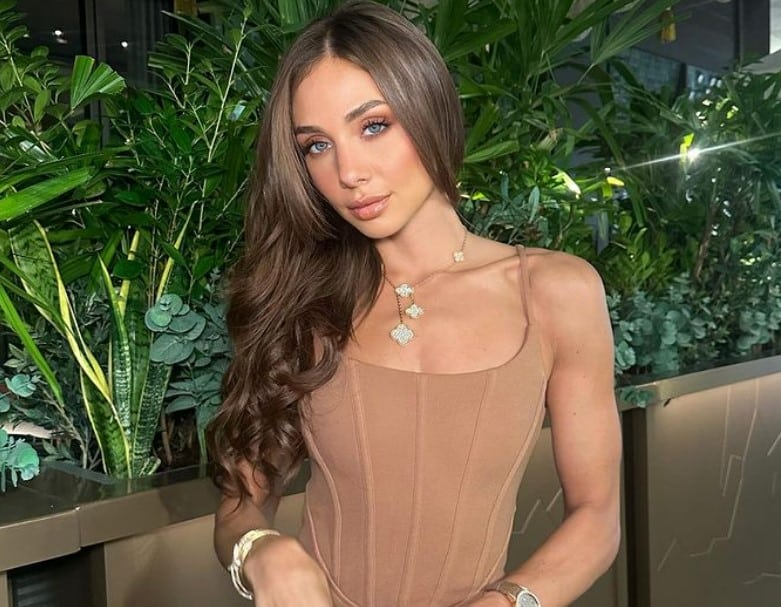
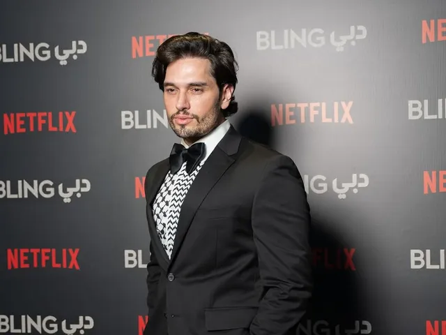
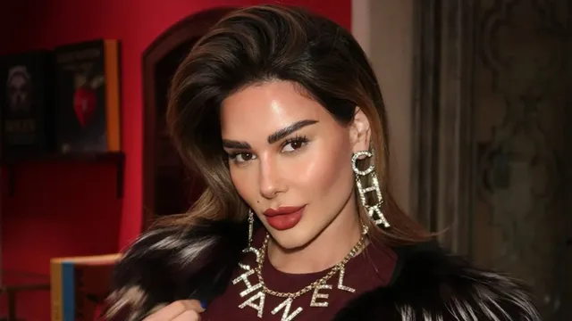
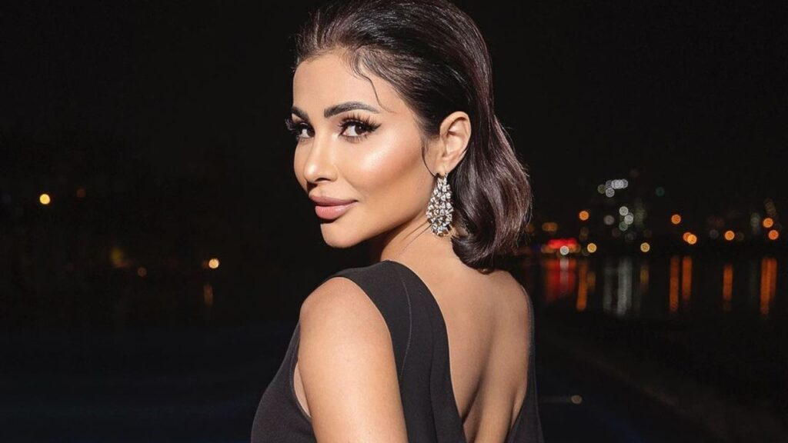

Characters
Season 1 Originals
Zeina Khoury
Zeina Khoury is a popular real estate agent, owning her own brand, "I Am The Company." She was born in Lebanon On December 13th, 1983 and was raised there until she moved to Dubai to go forward with her career. Her net worth is around $6 million. She is best friends with Safa Siddiqui, another cast member of Dubai Bling. Her husband's name is Hanna Azzi, and they have two kids, Joel and Alexa. She is currently 42 years old as of right now. Her personality is more on the calm and mature side.

Safa Siddiqui
Viewers love to watch Safa Siddiqui because of her outspoken personality and luxurious lifestyle. She is very sassy and extroverted, which is the opposite from her best friend, Zeina. Safa was born on August 7, 1988 in London, England and raised there for most of her life. Her parents were Iraqi immigrants. Her net worth is around $5 million. She works as a fashion designer and entrepeneur, and also modeled before she started her fashion brand. She is married to Fahad Siddiqui and has two daughters, Alina and Ayana. She is currently 36 years old.

Loujain Adada
Loujain Adada has a more calm personality, although she can get hyper sometimes. She usually goes by the nickname LJ. She works as a model and has modeled for brands such as Calvin Klein, Dolce & Gabbana, and Versace. She was born on November 11, 1989 in United Arab Emirates. Her net worth is around $4 million. At the age of 25, she married billionaire Walid Juffali, but he unfortunately passed away in 2016. She has two daughters named Talia and Lana. She is currently 35 years old.

Lojain Omran
Lojain Omran is one of the most sensible and mature out of the group. Lojain works as a television presenter, and is often presenting in front of large crowds. She was born on October 26th, 1977 in Saudi Arabia. Her net worth is around $6 million. She married Salman Al-Thabi, but they later got divorced. She then married Saif Al-Mansoori. She has two kids named Samir and Jilan. She is currently 47 years old.

Danya Mohammad
Danya Mohammad is a social media influencer who goes by "Diva Dee" on Instagram. She is calm, but will involve herself in drama if she needs to. She was born on January 3, 1991 in Dubai UAE. She is married to famous DJ Marwan Al Awadhi, commonly known as DJ Bliss. She has two kids, Zayed and Meera, and she is expecting another baby girl soon. Her estimated net worth is $6 million. She is currently 34 years old.

Farhana Bodi
Farhana Bodi is a girl who loves attention and being in the spotlight. She works as a businesswomen and an influencer. She was born on January 4th, 1986 in South Africa. She is of indian descent. Her net worth is around $2.5 million. She married Heroies Havewalla, but later divorced. She has a son named Aydin. Her current age is 39 years old.

Ebraheem Al-Samadi
Ebraheem Al-Samadi is a man who loves to be involved in drama, and really values friendship. He works as an entrepeneur and owns many cafes, like Forever Rose and Besties Cafe. He goes by "The Blooming Man" on social media. He has an estimated net worth of $50 million, making him one of the richest cast members of the show. He is married to Hamdah Al Hamly. He was born on January 15, 1988 in Kuwait. He is currently 37 years old.

Kris Fade
Kris Fade is an Australian-Lebanese man who works as a radio and tv personality. He is a fun-loving, out-going person. He has two daughters, Noushie and Kikki, from his first marriage with Marriane Argy, but they later divorced. He then married Brianna Ramirez in 2022, and has a son with her named Kruz. His net worth is around $2 million. He was born on February 27, 1980 in Sydney, Australia and later moved to Dubai. He is currently 44 years old.

Season 2 Additions
Mona Kattan
Mona Kattan is very kind and drama-free person. She spends her time very wisely and has a schedule for everything. She was born on May 8, 1985 in Tennessee. She is currently 39 years old. Her net worth is around $100 million, which makes her the richest upon the whole cast. She owns her own perfume brand, Kayali. She is married to Hassan Elamin, who also appears on season 2 of the show.

Season 3 Additions
Jwana Karim
Jwana Karim joined the show in the third season with a fun and extroverted personality. She works as an actress and singer. As of right now, her net worth is unknown. She was born on November 16, 1982 in Iraq, and is currently 42 years old. She had a busband that she later divorced, and his name is unknown. She has a daughter named Celine.

Mahira Aziz
Mahira Aziz is a newly introduced mature woman who tries her best to avoid any drama coming her way. She talks about her recent divorce with her ex-husband Khaled Ezz a lot throughout the show. She works as a TV host and an actress. She was born on November 6, 1982 in UAE, and is currently 42 years old. She has a daughter named Yasma. Her net worth is unknown as of right now.
